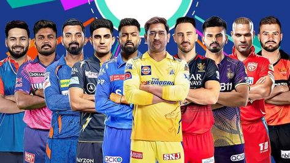

Welcome to Sports Pulse, your ultimate destination for all things sports! Whether you're a die-hard fan or a casual follower, we bring you the latest and most exciting updates from the world of sports. From thrilling Champions League clashes to the electrifying action of the IPL, we've got you covered with real-time scores, match highlights, expert analysis, and exclusive insights. Our goal is to keep you informed, engaged, and entertained with news that matters. We cover a wide range of sports including football, cricket, basketball, tennis, and more—bringing fans closer to the game they love. At Sports Pulse, we believe that sports unite people and ignite passion like nothing else. Stay tuned for daily updates, player interviews, opinion pieces, and in-depth coverage of your favorite tournaments and teams. Join us on this exhilarating journey and never miss a moment of the action. Your game, your news—right here.
Stay updated with the Latest Headlines from the world of sports! Here, you'll find the most recent and trending stories, breaking news, and major updates as they happen. From dramatic last-minute goals in the Champions League to sensational sixes in the IPL, we bring you the highlights that matter. Whether it's transfer news, injury updates, match previews, or post-game reactions, our headlines keep you in the loop with quick, concise, and reliable information. Don't miss a beat—our team works round the clock to ensure you're always ahead with the hottest sports news at your fingertips.
The UEFA Champions League 2025 has reached an electrifying stage, bringing together Europe’s top clubs in a fierce battle for continental supremacy. This season has been a thrilling mix of expected dominance and surprise breakthroughs, with powerhouses like Real Madrid, Manchester City, PSG, and Bayern Munich pushing hard for a spot in the final, while clubs like Aston Villa have emerged as unexpected challengers, bringing fresh energy to the tournament.
Real Madrid, with the brilliance of Jude Bellingham orchestrating play from midfield and the relentless pace of Vinícius Jr., has looked sharp and clinical, especially in their victory over Liverpool in the quarter-finals—a match that reignited a classic European rivalry. Despite spirited efforts from Liverpool’s Mohamed Salah and Darwin Núñez, defensive lapses cost them dearly as Madrid's experience in high-stakes matches proved decisive. Manchester City, led by Erling Haaland’s goal-scoring machine-like consistency and Kevin De Bruyne’s unmatched vision, have shown why they are the defending champions, dismantling Inter Milan’s deep defensive setup in the last round.
Inter, for their part, displayed admirable resilience with Lautaro Martínez fighting hard up front and Bastoni anchoring their backline, but ultimately they couldn’t hold off City’s tactical mastery.

PSG, still chasing that elusive first title, have looked razor-sharp this year, with Kylian Mbappé terrorizing defenders and scoring at will. Their tie against Barcelona was one of the most talked-about encounters of the tournament, where the Catalan giants—despite flashes of brilliance from Robert Lewandowski, Pedri, and teenage sensation Lamine Yamal—fell short due to PSG’s high tempo and aggressive finishing.
Bayern Munich, always a contender, marched forward with the ruthless efficiency they’re known for, with players like Harry Kane, Jamal Musiala, and Joshua Kimmich stepping up in crucial moments. One of the season’s most talked-about stories, however, has been the dream run of Aston Villa. Making their first deep run in decades, they stunned the football world by reaching the quarter-finals, defeating more fancied teams with a blend of organized defense, fearless pressing, and sharp finishing.

Players like Ollie Watkins and Douglas Luiz have become overnight heroes for Villa fans, and manager Unai Emery’s tactical setup has earned praise across Europe. Meanwhile, clubs like Barcelona and Liverpool may be out of the competition, but their young cores promise a strong return next season. As the semi-finals loom, with matchups like Real Madrid vs Manchester City and PSG vs Bayern Munich on the horizon, fans are in for a footballing spectacle filled with drama, skill, and unforgettable moments.
The 2025 final, set to be played at the Allianz Arena in Munich, promises to be one of the most exciting in recent memory, and with so many world-class players still in the mix—Mbappé, Haaland, Bellingham, Kane, and more—the race for the Champions League crown is as open and thrilling as ever.
The Indian Premier League 2025 is delivering another unforgettable season packed with explosive batting, tactical bowling, and edge-of-the-seat finishes as the tournament moves into its business end with playoff spots still up for grabs.
Traditional heavyweights like Mumbai Indians and Chennai Super Kings continue to show their class, while underdog teams like Punjab Kings and Lucknow Super Giants are making serious waves this year. Mumbai Indians, led by the calm leadership of Hardik Pandya and powered by big-hitters like Suryakumar Yadav and Ishan Kishan, have looked dangerous throughout the campaign, consistently putting up big totals and defending them with pace spearheads like Jasprit Bumrah leading the charge.
Chennai Super Kings, now under the guidance of Ruturaj Gaikwad, are staying competitive with MS Dhoni still playing a key mentoring role and the likes of Ravindra Jadeja and Moeen Ali contributing match-winning performances. Rajasthan Royals have shown remarkable form with Jos Buttler continuing his dominance at the top of the order, while Yuzvendra Chahal leads their spin attack with precision. Gujarat Titans, champions of 2022, are looking to reclaim their dominance, relying on the consistency of Shubman Gill and the finishing abilities of David Miller.
Over at Royal Challengers Bangalore, it has been a season of mixed emotions, with Virat Kohli playing some vintage knocks but the team struggling to find consistency in the middle order and with the ball. Meanwhile, Delhi Capitals and Sunrisers Hyderabad have shown glimpses of brilliance—particularly through young Indian talents like Abhishek Sharma and Riyan Parag—but haven't quite found the rhythm to secure a top-four finish yet.
A standout feature of IPL 2025 has been the emergence of young stars, with players like Yashasvi Jaiswal, Tilak Varma, and Mayank Yadav stepping up and making big impacts in pressure situations.
Astonishing run-chases and last-ball thrillers have become the norm this season, keeping fans glued to their screens night after night. The points table remains tightly contested, with just a few points separating the top six teams and net run rate playing a crucial role in deciding playoff positions.
With the playoffs on the horizon, teams are sharpening their strategies and rotating squads to maintain freshness in this grueling tournament. The final, scheduled to take place at the Narendra Modi Stadium in Ahmedabad, is expected to draw a record crowd and promises to be a spectacular showdown. As we inch closer to the climax of IPL 2025, all eyes are on which team can hold their nerve, execute under pressure, and lift the coveted trophy. Whether it’s the experience of seasoned veterans like Rohit Sharma and Faf du Plessis, or the fearless approach of newcomers like Rinku Singh and Nehal Wadhera, this season has reminded us why the IPL is considered the most entertaining and competitive T20 league in the world.

The 2024–25 NBA season, the league’s 79th, has been one of the most dynamic and eventful in recent years. Wrapping up its regular season on April 13, 2025, it showcased a mix of record-breaking performances, rising stars, and exciting new developments across the league. The Oklahoma City Thunder emerged as the top seed, powered by the incredible play of Shai Gilgeous-Alexander, who also secured the league's scoring title. His leadership and consistency have made the Thunder serious contenders heading into the playoffs.
Meanwhile, the Boston Celtics set a new NBA record for the most three-pointers made in a single season, a testament to their sharp-shooting depth and offensive system. Denver Nuggets’ star Nikola Jokić added to his legacy by posting the highest-scoring triple-double in NBA history with 61 points, 10 rebounds, and 10 assists—a performance that will be remembered for years.
The season also included the second edition of the Emirates NBA Cup, an in-season tournament held from November 12 to December 17, 2024. It continued to bring competitive excitement and additional spotlight to teams early in the season. The 2025 NBA All-Star Game took place at the Chase Center in San Francisco on February 16, featuring thrilling moments and showcasing the league's brightest talent.
The play-in tournament, held from April 15–18, determined the final seeds for the NBA Playoffs, which kicked off on April 19. With teams like the Thunder and Celtics looking dominant, fans anticipate a fiercely competitive postseason.
Beyond the court, the league experienced significant arena updates. The Los Angeles Clippers officially moved into their new home—the Intuit Dome—making it the first time since the 1998–99 season that every NBA franchise has its own dedicated arena. Additionally, the Cleveland Cavaliers' arena was renamed Rocket Arena, and the Phoenix Suns’ venue was temporarily known as PHX Arena.
Looking ahead, all eyes are on the 2025 NBA Draft, scheduled for June 25–26 at the Barclays Center in Brooklyn. This year’s draft class is generating a lot of buzz. Among the top prospects is Duke's Cooper Flagg, a projected No. 1 pick, whose athleticism and skill set have scouts excited. Michigan’s Danny Wolf, a skilled forward/center, and international talent Dame Sarr are also considered first-round hopefuls, representing a new wave of talent that could reshape the league’s future.
As the season transitions into the playoffs and the buildup to the draft begins, the 2024–25 NBA season stands out for its balance of veteran excellence and youthful promise. From record-breaking stats and new rivalries to emerging stars and franchise moves, it has truly been a season to remember for fans around the world. With the playoffs in full swing and the draft approaching, the excitement surrounding the NBA continues to build, setting the stage for an even more thrilling finish.
click here for more updates on NBA.........